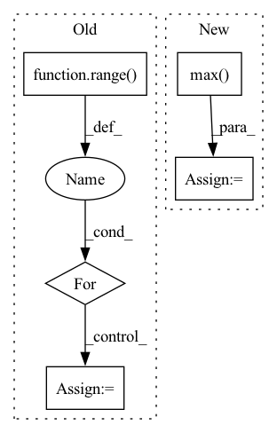

Pattern ID :35936
Before Change
max_dims = math.floor(math.log(ctx.dims.sequence, ctx.dims.spatial_mixing_kernel))
mask = jnp.triu(jnp.ones(weight_shape, dtype=ctx.model.computation_dtype)) if ctx.model.autoregressive else 1
weights = [get_param(ctx, f"mix_{i}", weight_shape, std=1, scale=ctx.dims.spatial_mixing_kernel ** -0.5)
for i in range( max_dims) ]
if ctx.is_initializing:
return inp
inp = inp.reshape(ctx.dims.batch, -1, *[ctx.dims.spatial_mixing_kernel] * max_dims, ctx.dims.features)
original_dims = "".join(chr(ord("a") + i) for i in range(inp.ndim))
for i, wgt in enumerate(weights):
new_dims = original_dims[:i + 2] + "z" + original_dims[i + 3:]
reduced_dim = original_dims[i + 2]
if i > 0:
inp = activate(inp)
inp = jnp.einsum(f"{original_dims},{reduced_dim}z,{reduced_dim}z->{new_dims}", inp, wgt, mask)
return inp.reshape(original_shape)
After Change
original_shape = inp.shape
max_dims = math.floor(math.log(ctx.dims.sequence, ctx.dims.spatial_mixing_kernel))
batch = lax.max( ctx.dims.sequence // ctx.dims.spatial_mixing_kernel ** (depth % max_dims + 1), 1)
mask = jnp.logical_not(jnp.tri(ctx.dims.spatial_mixing_kernel, k=-1)) if ctx.model.autoregressive else 1
out = inp.reshape(ctx.dims.batch * batch, ctx.dims.spatial_mixing_kernel, -1, ctx.dims.features)
out = jnp.einsum("bkrf,kg,kg->bgrf", out, wgt0, mask)
out = activate(ctx, out)
out = jnp.einsum("bkrf,kg,kg->bgrf", out, wgt1, mask)
return out.reshape(original_shape)
In pattern: SUPERPATTERN
Frequency: 3
Non-data size: 5
Instances Fragment ID: 102224695
Project Name: homebrewnlp/homebrewnlp-jax
Commit Name: acfb8d5fbb1ba8f6b7830832f913663e426b9d09
Time: 2022-09-01
Author: 39779310+ClashLuke@users.noreply.github.com
File Name: src/model/mixer.py
M Class Name: AnonimousClass
N Class Name: AnonimousClass
M Method Name: mix(3)
N Method Name: mix(2)
M Parent Class:
N Parent Class:
M File Name: src/model/mixer.py
N File Name: src/model/mixer.py
M Start Line: 14
M End Line: 32
N Start Line: 13
N End Line: 29
Before Change
def run_pytorch_module(module, shape=None):
shape = shape or (3, 5)
input_values = [torch.rand(*shape, dtype=torch.float32) for _ in range( 5) ]
pytorch_inputs = [
torch.empty(*shape, dtype=torch.float32, requires_grad=False)
for _ in range(5)
]
dace_inputs = [
torch.empty(*shape, dtype=torch.float32, requires_grad=False)
for _ in range(5)
]
pytorch_outputs = []
for inp, inp_src in zip(pytorch_inputs, input_values):
inp.copy_(inp_src)
inp.requires_grad = True
s = module(inp).sum()
s.backward()
pytorch_outputs.append(inp.grad)After Change
dace_module = DaceModule(module, backward=True)
if use_max:
s = dace_module(dace_input).max()
else:
s = dace_module(dace_input).sum()
s.backward()
print("Dace output:") Fragment ID: 102224725
Project Name: spcl/daceml
Commit Name: 682aea4a22edc4a5268188596bcf443bd041a0a7
Time: 2021-03-01
Author: oliverrausch99@gmail.com
File Name: tests/autodiff/pytorch/test_pytorch.py
M Class Name: AnonimousClass
N Class Name: AnonimousClass
M Method Name: run_pytorch_module(3)
N Method Name: run_pytorch_module(2)
M Parent Class:
N Parent Class:
M File Name: tests/autodiff/pytorch/test_pytorch.py
N File Name: tests/autodiff/pytorch/test_pytorch.py
M Start Line: 13
M End Line: 45
N Start Line: 10
N End Line: 44
Before Change
cols = len(pillar_matrix[0])
for i in range( rows):
for j in range(cols):
pillar_matrix[i][j] = len(pillar_matrix[i][j])
true_pillar_matrix = [
[2, 1, 0],After Change
x_max = np.max(points[:, 0])
x_min = np.min(points[:, 0])
y_max = np.max( points[:, 1])
y_min = np.min(points[:, 1])
z_max = np.max(points[:, 2])
z_min = np.min(points[:, 2]) Fragment ID: 102224701
Project Name: jabb0/fastflow3d
Commit Name: fa5213b611fd96c6e2df69f237b25e47cca3be34
Time: 2021-06-13
Author: aron.distelzweig@hotmail.com
File Name: tests/test_pillar.py
M Class Name: AnonimousClass
N Class Name: AnonimousClass
M Method Name: test_create_pillars(0)
N Method Name: test_create_pillars(0)
M Parent Class:
N Parent Class:
M File Name: tests/test_pillar.py
N File Name: tests/test_pillar.py
M Start Line: 9
M End Line: 34
N Start Line: 9
N End Line: 38